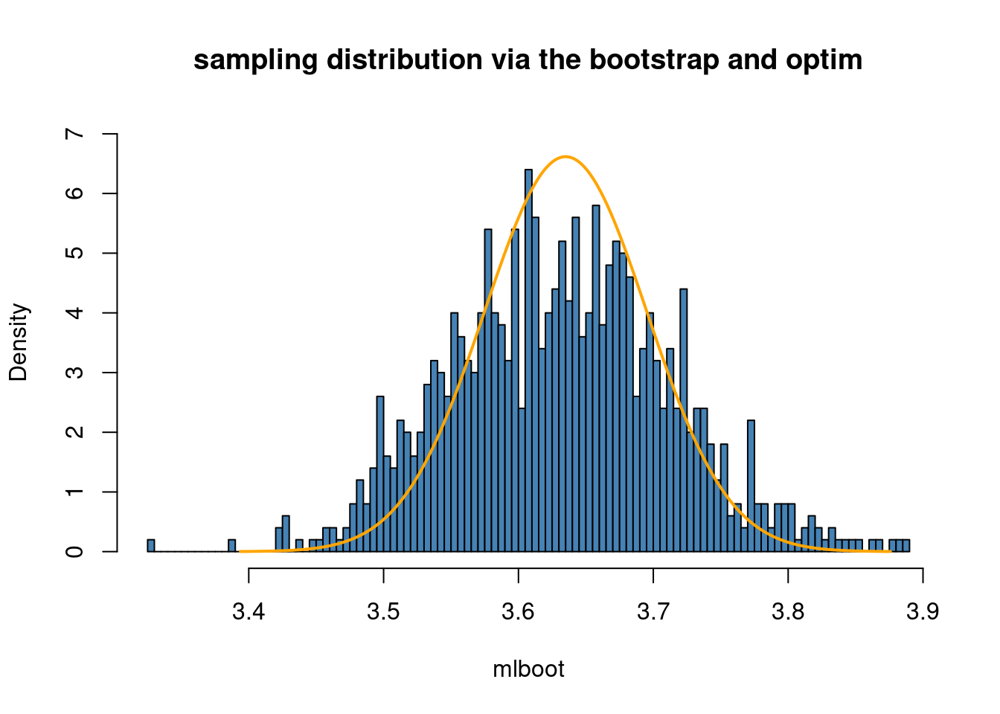

library(latex2exp) # to be able to plot mathematical symbols (LaTeX)
library(remotes) # to be able to load packages from GitHub
library(ggplot2) # fancy plotting
library(mvtnorm) # the multivariate normal distributionThe bootstrap
In this tutorial you will learn about the bootstrap method for approximating the sampling distribution of estimator, like that for the maximum likelihood (ML) estimator. It is a purely simulation-based method that is quite useful in many situations.
Let’s first load some libraries that we will use (install them using install.packages() if you haven’t already).
Data
We will use the dataset ebaycoins in the R package SUdatasets for illustration. The dataset contains data from 1000 eBay auctions of collector’s coins1. Let’s load the dataset and have a look:
#install_github("StatisticsSU/SUdatasets") # uncomment if this is not installed
library("SUdatasets")
head(ebaycoins) BookVal MinorBlem MajorBlem PowerSeller IDSeller Sealed NegFeedback
1 18.95 0 0 0 0 0 0
2 43.50 0 0 1 0 0 0
3 24.50 0 0 1 0 0 0
4 34.50 1 0 0 0 0 0
5 99.50 0 0 0 0 0 1
6 9.50 0 0 0 0 0 0
ReservePriceFrac NBidders FinalPrice
1 0.3688654 2 15.50
2 0.2298851 6 41.00
3 1.0200000 1 24.99
4 0.7217391 1 24.90
5 0.1672362 4 72.65
6 1.2094737 2 17.52Each auction (rows in the dataset) will be taken as an observation, and the dataset has the following variables:
the number of bidders in each auction (
NBidders)the final price (
FinalPrice)the book value of the coin according a coin collectors catalogue (
BookVal).the seller’s reservations price (lowest price that the seller is willing to sell for) as a fraction the book value (
ReservePriceFrac).binary variables on whether or not the seller is a verified ebay seller (
IDSeller), sells large quantites (PowerSeller) and if the seller has many reviews with negative feedback (NegFeedback)information about the condition of the object: if it has a minor blemish (
MinorBlem), a major one (MajorBlem), or sold in its original unbroken packaging (Sealed).
Maximum likelihood for the Poisson model
We will first analyze only the variable NBidders and later move over to a regression modeling situation. Since NBidders is a count variable, a natural first model to consider is the Poisson model:
\[ Y_1,\ldots,Y_n \vert \lambda \overset{\mathrm{iid}}{\sim}\mathrm{Poisson}(\lambda) \]
where we use the symbol \(Y\) for the random variable NBidders and \(y\) as the observed value.
We can estimate \(\lambda\) by the maximum likelihood (ML) metod. The ML method finds the value for \(\lambda\) in the Poisson distribution that maximizes the probability of the observed dataset \(y_1,\ldots,y_n\). As we have seen in tutorial on numerical ML, the ML estimate for this model is just the sample mean \(\hat \lambda = \bar y\) and the standard error is \(\mathrm{SE}(\hat\lambda)=\sqrt{\bar y/n}\). For NBidders in the ebayscoins data we have
n = length(ebaycoins$NBidders)
message(paste("ML estimate:", mean(ebaycoins$NBidders)))ML estimate: 3.635message(paste("SE of ML estimate:", sqrt(mean(ebaycoins$NBidders)/n)))SE of ML estimate: 0.0602909611799314Sampling distribution of MLE by bootstrap
The bootstrap is an simulation-based technique for obtaining an approximation to the sampling distribution. Recall first that the sampling distribution of an estimator answers the question “what is the distribution of the estimator when we repetedly draw samples of size \(n\) from the population?”. The underlying assumption of the bootstrap method is that the sample is good representation of the underlying population distribution. We can therefore approximate the sampling distribution by sampling a lot of new datasets from the sample with replacement. This means the each new so called bootstrap sample contains only observations from the sample, but since the sampling is with replacement each such bootstrap sample will typically contain multiple copies of some observations while some observations in the original sample will not appear at all.
To fix ideas, assume that we have av sample of only \(n=5\) observations: \(y=(3,5,1,7,2)\). Here are five bootstrap samples:
y = c(3,5,1,7,2)
sample(y, replace = TRUE)[1] 2 7 7 2 5sample(y, replace = TRUE)[1] 3 2 3 1 5sample(y, replace = TRUE)[1] 7 5 5 1 5sample(y, replace = TRUE)[1] 1 7 1 7 2sample(y, replace = TRUE)[1] 7 7 1 1 5Now, for each bootstrap sample we compute the estimator, in the Poisson case the mean of the bootstrap sample. The bootstrap approximation of the sampling distribution is then approximated by a histogram of the estimates from the bootstrap samples.
Let’s try this out for the Poisson model with a single parameter \(\lambda\), where the ML estimate was earlier shown to be \(\hat\lambda=\bar y\) and the estimator standard error \(SE(\hat\lambda)=\sqrt{\bar y/n}\). The code below computes the bootstrap approximation of the sampling distribution of \(\hat\lambda = \bar y\) for the number of bidders in the ebaycoins data (the large sample approximation from optim is overlayed as an orange curve for comparison). The bootstrap approximation is fairly close to the normal approximation from optim.
y = ebaycoins$NBidders
n = length(y)
mle = mean(y)
mle_se = sqrt(mean(y)/n)
nboot = 10000
mlboot = rep(NA, nboot)
for (j in 1:nboot){
yboot = sample(y, replace = TRUE) # sample with replace of the original y
mlboot[j] = mean(yboot)
}
hist(mlboot, 100, freq = FALSE, ylim = c(0,7), c = "steelblue",
main = "sampling distribution via the bootstrap")
lambdas = seq(mle - 4*mle_se, mle + 4*mle_se, by = 0.001)
lines(lambdas, dnorm(lambdas, mle, mle_se), type ="l", col = "orange", lwd = 2,
xlab = TeX(r'($\lambda$)'))
In this simple case we had a formula for the ML estimator \(\bar y\). But what if we didn’t have such a formula (Iike in the Poisson regression case), what can we do then? Well, we can just use optim on each bootstrap sample.
To use optim, we need to code up the Poisson log-likelihood. Let us define this as an R function that takes the data y and the parameter lambda as inputs and returns the log-likelihood value loglik as output.
loglik_pois <- function(lambda, y){
loglik = sum(dpois(y, lambda, log = TRUE))
return(loglik)
}We will only draw 1000 bootstrap samples so that the computations run relatively fast:
y = ebaycoins$NBidders
n = length(y)
mle = mean(y)
mle_se = sqrt(mean(y)/n)
nboot = 1000
mlboot = rep(NA, nboot)
initVal = 2
for (j in 1:nboot){
yboot = sample(y, replace = TRUE) # sample with replace of the original y
optres <- optim(initVal, loglik_pois, gr=NULL, yboot, control=list(fnscale=-1),
method=c("BFGS"), hessian=TRUE)
mlboot[j] = optres$par
}
hist(mlboot, 100, freq = FALSE, ylim = c(0,7), c = "steelblue",
main = "sampling distribution via the bootstrap and optim")
lambdas = seq(mle - 4*mle_se, mle + 4*mle_se, by = 0.001)
lines(lambdas, dnorm(lambdas, mle, mle_se), type ="l", col = "orange", lwd = 2,
xlab = TeX(r'($\lambda$)'))
It is important to note that I use the generated bootstrap sample yboot as the argument to loglik_pois at every iteration of the loop, i.e. optim gets a fresh bootstrap sample at every iteration of the loop.